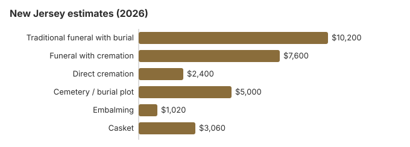

Funeral Costs in New Jersey: What Families Pay in 2026
New Jersey ranks among the more expensive states for a funeral: our 2026 estimate for a traditional service with burial is about $10,200, 23% above the $8,300 national median, and the cemetery bill comes on top. Direct cremation, near $2,400, is the floor, and 48% of New Jersey families now cremate. Below are the item prices, death certificate fees, the state General Assistance burial allowance and the New Jersey rules that shape the bill.
New Jersey Funeral Prices in Detail
Our estimates for each part of a New Jersey funeral are below. The Board of Mortuary Science licenses the homes but does not set what they charge.
| Line item | Estimate | From - to |
|---|---|---|
| Traditional funeral with burial | $10,200 | $7,650 – $13,260 |
| Funeral with cremation | $7,600 | $6,080 – $9,880 |
| Direct cremation | $2,400 | $1,680 – $3,360 |
| Cemetery / burial plot | $5,000 | $2,500 – $10,000 |
| Embalming | $1,020 | $500 – $1,500 |
| Casket | $3,060 | $1,020 – $8,160 |
About these New Jersey numbers: they are estimates from our own model, not a price survey of New Jersey homes, and they are not a quote or advice. Read how we estimate and the disclaimer.
State sources: N.J.A.C. 10:90-8.5.

Less Expensive New Jersey Funerals
| Option | Price | Includes |
|---|---|---|
| Direct cremation | $2,400 | Cremation without a viewing or service, no sooner than 24 hours after death (N.J.S.A. 26:7-18.1). |
| Direct burial | $5,100 | Prompt burial, no embalming or viewing; the New Jersey cemetery bills the plot and opening on its own invoice. |
| Green burial | $5,610 | No embalming and no vault, at a New Jersey cemetery that accepts natural burial. |
| Cremation + memorial | $7,600 | Cremation, memorial afterwards |
| Traditional funeral | $10,200 | Viewing, funeral and burial |
New Jersey Buyer Protections
New Jersey Cremation and Burial Pages
Go deeper on either choice:
Cremation Costs in New Jersey
Nearly half of New Jersey families (48%) cremate; direct cremation from about $2,400, about $7,600 with a service, plus urns and scattering.
Burial Costs in New Jersey
With a plot from about $5,000, casket, vault, stone and opening, a New Jersey burial totals $23,260-$27,760.
Why New Jersey Costs More
A few things set New Jersey prices apart.
Land, labor and overhead in the New York and Philadelphia suburbs push funeral home and cemetery charges above most of the country. With 48% of families cremating, cremation-only providers compete hard on direct cremation, while a full traditional service remains the most expensive line.
New Jersey Add-On Charges
These items often appear on a New Jersey bill after the first quote.
- Embalming presented as required. With refrigeration at 45°F or below, New Jersey does not require it within 48 hours.
New Jersey City Prices
No price source we rely on breaks New Jersey down by city, so Newark, Jersey City and Paterson appear without a number. The state estimate of roughly $10,200 is the comparison point in each, and the State Board of Mortuary Science, within the Division of Consumer Affairs, licenses the homes that serve them.
New Jersey: Cremation Against Burial
Cremation
- Direct cremation around $2,400
- Around $7,600 with a service
- No grave needed
- Ashes can be kept, scattered or buried later
- 48% of New Jersey families
Traditional Burial
- Funeral around $10,200
- Plot around $5,000 more
- Vault or liner per cemetery rules
- A grave to visit
- Metal casket: roughly $2,500 national median (NFDA 2023 General Price List Study); New Jersey prices differ by seller
Winter Burials and Other New Jersey Quirks
Winter timing affects Northeastern funerals more than most families expect; cemetery interment can be delayed in New Jersey between December and March, which sometimes shifts the cost structure toward cremation with later interment or memorial.
New Jersey Funeral Assistance
- Relatives in New Jersey can put up to $1,570 of their own money toward the funeral without reducing the General Assistance allowance, so family help and public help can be combined.
- The $255 Social Security death payment goes only to an eligible surviving spouse or child; in New Jersey, as elsewhere, they apply by calling 1-800-772-1213 within two years of the death.
- For a New Jersey veteran, the person who covered the funeral bill claims the VA allowance on Form 21P-530EZ: up to $1,032 for burial plus $1,032 for a plot when a non-service-connected death falls on or after October 1, 2026. Eligibility rules for New Jersey families are in our veteran burial benefits guide.
- For Medicaid, charity and other sources, see paying for a funeral and when there is no money.
Educational Resources
- Payment Assistance GuideGovernment programs and financial help for funeral costs
- Best Burial Insurance CompaniesSide-by-side comparison of top burial insurance providers
- Funeral Insurance GuideCompare final expense and burial insurance options
- Insurance Plan ComparisonCompare coverage, premiums, and payout speed across providers
- Funeral Consumers AllianceIndependent nonprofit consumer advocacy for funeral rights
- FTC Funeral RuleThe federal rule protecting funeral consumers
Compare Funeral Costs
- Cremation vs. Burial Cost ComparisonSide-by-side price comparison to help you decide
- How to Compare Funeral PricesStep-by-step guide to getting the best price
- Cheapest Funeral OptionsLower-cost alternatives, with typical price ranges
- Average Funeral Cost in 2026National cost breakdown with real prices
- Direct Cremation: Most Affordable OptionNFDA 2023 median $2,645 with a family-supplied container (latest available)
- Funeral Cost BreakdownEvery line item explained: know what you're paying for
New Jersey Planning Steps
Taken in this order, these steps avoid the costliest mistakes in New Jersey:
- Choose burial or cremation: cremation in New Jersey or burial in New Jersey.
New Jersey death certificates: $25, then $2
From the state Office of Vital Statistics and Registry, a New Jersey death record costs $25 for the search plus one certified copy (or a "no record" statement), and only $2 for each further copy of that record ordered at the same time (NJ Department of Health, vital records fees; checked October 29, 2026). The fees are set by rule in N.J.A.C. 8:2A-2.4.
- Town or state: the local registrar in the municipality where the death happened can also issue copies, but each town sets its own fee by ordinance, so the price differs from place to place. Local copies serve nearly every purpose.
- Paying the state: make the check or money order out to "Treasurer, State of New Jersey"; the state does not take cards by mail. VitalChek orders add a processing fee of $6 by mail or $12.95 by phone, and optional UPS tracking is $18.
- Who may get a certified copy: a spouse, civil union or domestic partner, parent, adult child, grandchild or sibling, a legal representative, or someone with a court order, with proof of the relationship. Without that proof you get an informational certification that is not valid for legal use.
- Deaths elsewhere: if a New Jersey resident died in another state, the record is held there, not in Trenton.
At $2 a copy after the first, ordering extras in one request is cheap: six certified copies come to $35 from the state. The long-form copy also shows the place of burial.
Who regulates New Jersey funeral homes, and public help
The State Board of Mortuary Science, part of the Division of Consumer Affairs (973-504-6425), licenses New Jersey funeral homes and handles complaints about prices, pressure sales or a missing price list.
New Jersey is among the nine states the Funeral Consumers Alliance lists as requiring a licensed director for three tasks: moving the body, filing the death certificate and attending the final disposition (N.J. Stat. § 26:6). Families may still wash and dress the body themselves or hold the service at home. Cremation cannot take place until 24 hours after death (N.J.S.A. 26:7-18.1).
General Assistance burial allowance
WorkFirst New Jersey General Assistance will pay up to $3,056 toward the funeral and $714 toward the cemetery, $3,770 in all, and relatives may add up to $1,570 of their own without cutting the allowance (N.J.A.C. 10:90-8.5). (Source: N.J.A.C. 10:90-8.5.) The funeral home and the cemetery each file a separate claim with the county welfare agency.
Veterans' graves
Finn's Point National Cemetery in Pennsville (215-222-7510) now takes cremated remains only, and the funeral home schedules it through the VA's National Cemetery Scheduling Office, 800-535-1117. Most New Jersey veterans are buried at the state's Brigadier General William C. Doyle Veterans Memorial Cemetery in Wrightstown (609-738-2400), where the family applies directly.
A short New Jersey checklist
- Collect written price lists from two or more New Jersey homes before signing.
- Make the embalming-and-viewing call at the start; with refrigeration, embalming is optional.
- Call the county welfare agency before the service if General Assistance may apply.
- For a veteran, price Doyle cemetery against a private New Jersey plot.
- Take any price-list dispute to the Division of Consumer Affairs, 973-504-6425.
Frequently Asked Questions
What is the price of a New Jersey funeral?
The only reliable way to pin down your number is to pull General Price Lists from two or three Newark-area providers and compare line by line.
How much does cremation save in New Jersey?
Usually by $7,800 or more: direct cremation is about $2,400 and a traditional funeral with burial about $10,200, before the plot. New Jersey's 48% cremation rate is under the 63.4% NFDA projected nationally for 2025.
Which price rules protect New Jersey families?
The federal Rule gives you an itemized General Price List, prices by phone and the right to buy only what you choose. New Jersey writes much of the same into its own rules: funeral homes must give you a general price list, a casket price list and an outer burial container price list (N.J.A.C. 13:36-9.7), and a signed Statement of Funeral Goods and Services Selected that itemizes each charge (N.J.A.C. 13:36-1.9).
For a prepaid funeral, New Jersey requires the money to go into a funeral trust or a funeral insurance policy, and the price lists and statement must be given at the time of the sale (N.J.A.C. 13:36-11.2).
How do I lower a New Jersey funeral bill?
Gather price lists from two or three homes near you before agreeing to anything. If the death falls between December and March, ask the cemetery for its winter charges in writing, since many New Jersey cemeteries add a frozen-ground fee. Municipal, Catholic and Jewish cemeteries in the state usually charge $1,000 or more less than private memorial parks, and direct cremation, about $2,400, is the lowest-cost choice in every part of New Jersey.
Must a body be embalmed in New Jersey?
Not in New Jersey, as long as the body is kept cold. N.J.A.C. 8:9-1.1 does not allow a body to remain unburied or uncremated in New Jersey longer than 48 hours unless it is embalmed or kept at 45°F or below. It also bars bringing an unembalmed body into the state more than 48 hours after death, except under an emergency waiver from the Commissioner of Health.
For an in-state funeral with refrigeration, the roughly $1,020 that embalming adds on our New Jersey estimate is a choice, and a disputed charge can be raised with the State Board of Mortuary Science through the Division of Consumer Affairs (973-504-6425).
Is New Jersey one of the priciest states?
Near the top. At $10,200, the New Jersey traditional average sits 23% higher than the $8,300 national median because of Northeast land, wage and overhead costs.
What is the lowest-cost New Jersey funeral?
Direct cremation is the lowest-cost option in New Jersey, starting at roughly $2,400. Direct burial comes next at around $5,100 and still avoids viewing, ceremony, and embalming, though the $5,000 New Jersey plot estimate still applies.
How do I find a cheaper New Jersey funeral home?
Request price lists from three or more New Jersey homes to spot outliers, ask the Funeral Consumers Alliance of New Jersey for member price surveys, and include a cremation-only provider and each home's simplest package in the comparison.